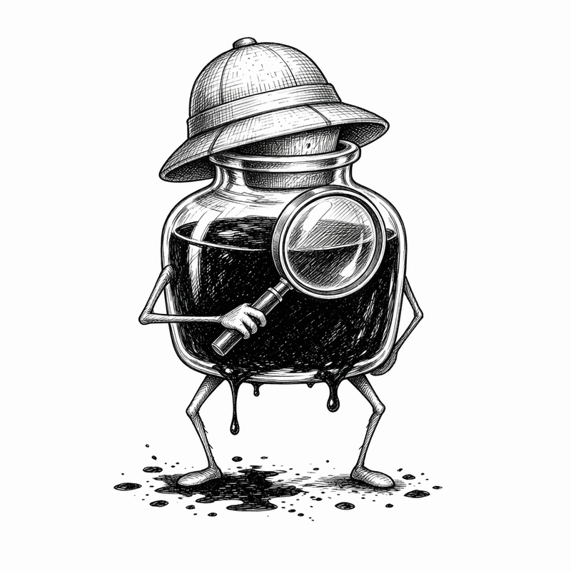

DISCOVER WALKS
Inky at your wrist
Ready

Keep the essentials close
00:00time
0.00 midistance
Start a simple open walk. Choose route details later.
Refine it later
Save the location and intent. Add names, notes, and details in the full app.
Your saved places
- Finding nearby places…
Continue in the full app
0 quick captures to refine
Open full app Watch and full views share this browser’s private local journal. Cross-device sync is not claimed.